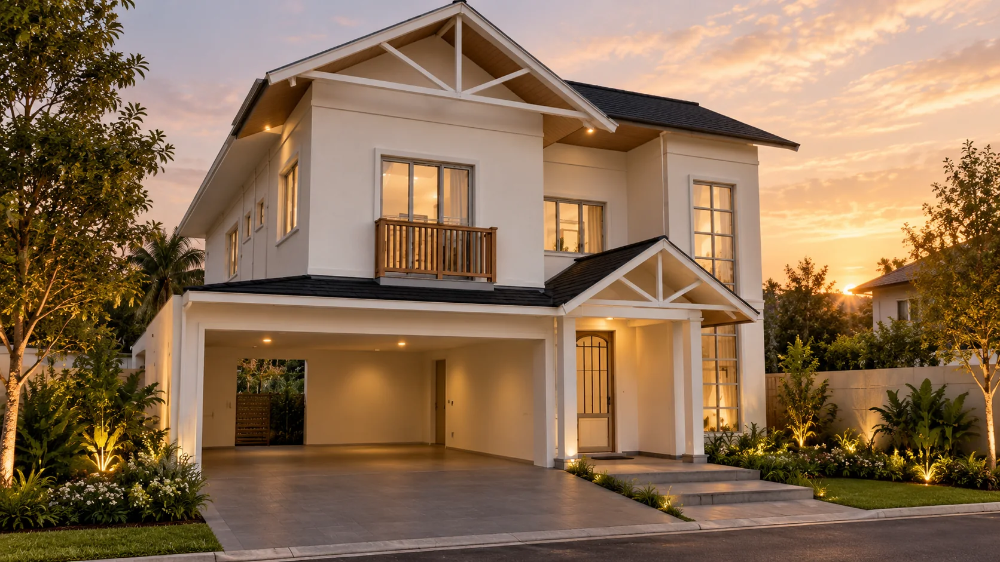
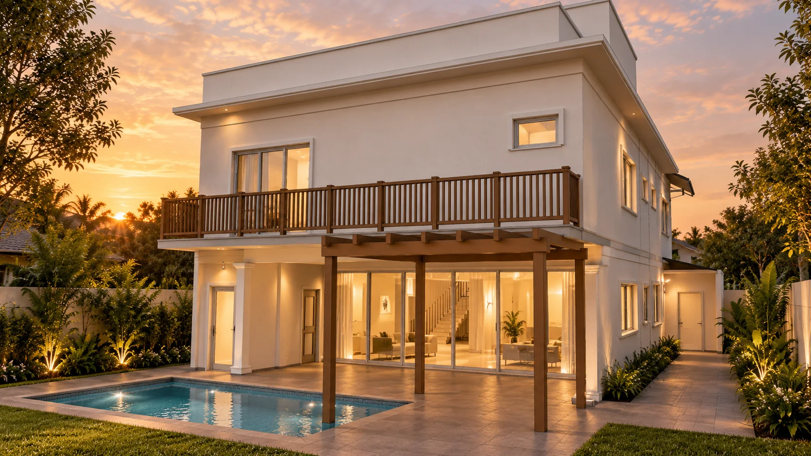
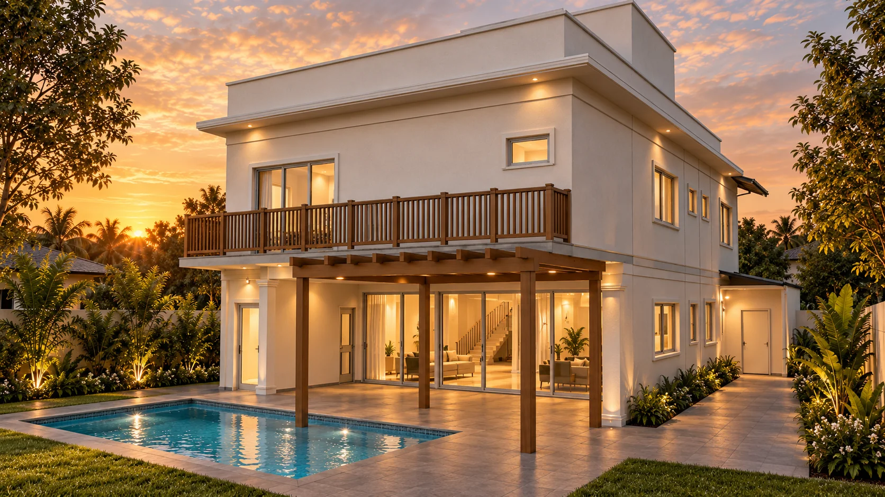

Fachada.
A garagem aberta, o acesso principal e os frontões vistos na altura de quem chega.
CONTINUE DESCENDO ↓


INDAIATUBA · QUADRA AA · LOTE 24
A arquitetura de receber.
O privilégio de pertencer.
Frontões e telhados aparentes marcam a fachada de inspiração americana. Nos fundos, volumes contemporâneos, varanda e piscina desenham uma relação mais aberta com o jardim.
Uma casa de dois pavimentos, com espaços sociais conectados e a intimidade das suítes preservada no andar superior.
Varanda, gourmet e piscina.
Espaços para ficar um pouco mais.
Explore os volumes, descubra os encontros da cobertura e veja a relação entre os pavimentos.
Maquete derivada do modelamento SketchUp. A vista explodida separa níveis para leitura espacial. Consulte as pranchas para os detalhes do projeto.
Desça a página para avançar pela casa. Em cada ambiente, arraste a vista para olhar em qualquer direção.
A garagem aberta, o acesso principal e os frontões vistos na altura de quem chega.
CONTINUE DESCENDO ↓Por dentro da área social, observe as aberturas e a conexão entre a sala, a circulação e o lazer.
SIGA ATÉ O GOURMET ↓O espaço coberto se abre para a piscina e a varanda dos fundos.
CONSULTAR AS PRANCHAS ↗Passeio 360° pelo modelo arquitetônico, com materiais simplificados. Esta visualização não é uma fotografia panorâmica ou um render fotorrealista dos interiores.
Tons claros, madeira e coberturas escuras. Uma composição de contrastes serenos, revelada pela luz do fim de tarde.
CASA DO LAGO / AA 24As duas pranchas originais utilizadas no modelamento da residência.